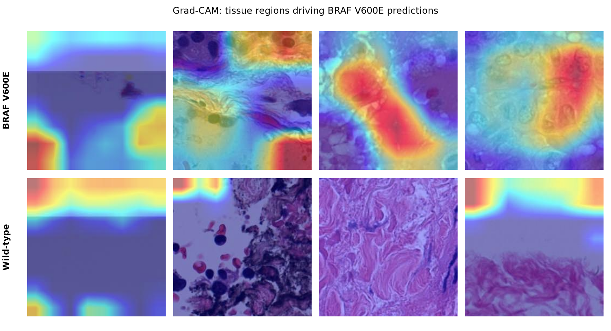

Thyroid Cancer BRAF V600E Classifier
A deep learning pipeline that predicts BRAF V600E mutation status in papillary thyroid carcinoma directly from H&E-stained histopathology images, motivated by my own thyroid cancer diagnosis. Built end-to-end against the TCGA-THCA dataset: data acquisition, tissue tiling, a fine-tuned ResNet18 classifier, and Grad-CAM interpretability to visualize which tissue regions drive each prediction. Reached a 0.75 slide-level validation AUC across 99 patients.
View Code